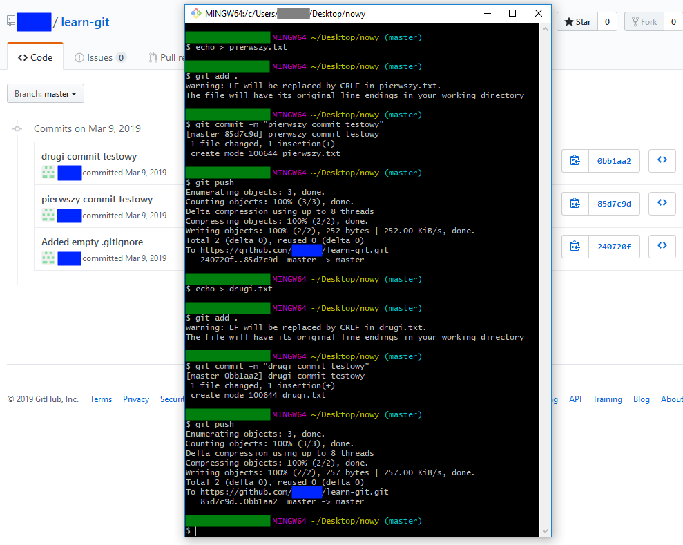
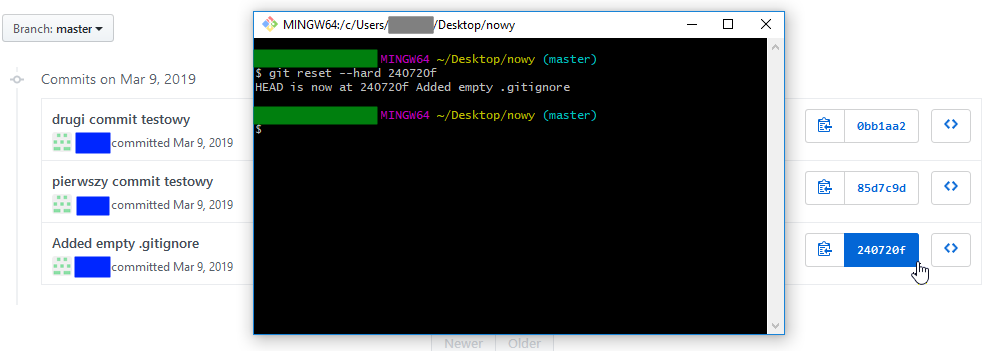
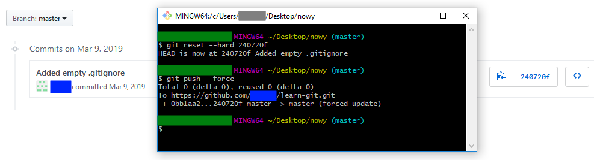
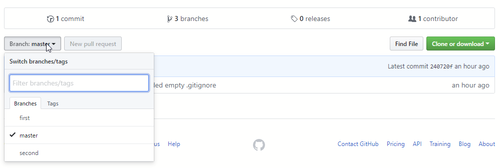
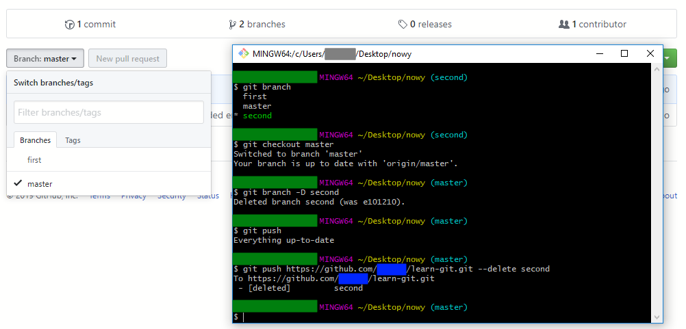

Usuwanie commit-ów
- tworzenie dodatkowych commitów
echo > pierwszy.txtgit add .git commit -m "pierwszy commit testowy"git push
- ustawienie ostaniego commita do zachowania
git reset --hard _nr_commita_do zachowania_
- nadpisanie danych na serwerze
git push --force



Usuwanie gałęzi
- tworzenie dodatkowych gałęzi
- usuwanie brancha lokalnego
git branchgit checkout mastergit branch -D secondgit push
- usuwanie brancha zdalnego
git push https://github.com/_nazwa_użytkownika_/learn-git.git --delete second

